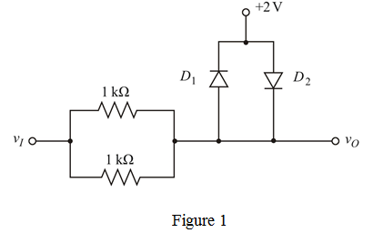
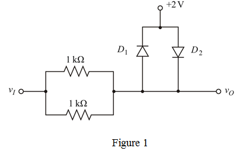
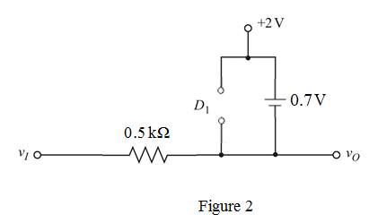
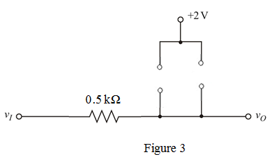
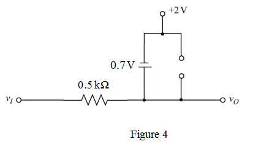
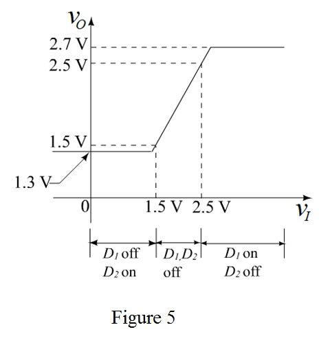

Refer to Figure P4.85 (a) and Figure P4.85 (b) in the text book.
When the two input and output terminals are tied together, the two  resistors become parallel.
resistors become parallel.
Draw the following circuit diagram.

Refer to Figure P4.85 (a) and Figure P4.85 (b) in the text book.
When the two input and output terminals are tied together, the two resistors become parallel.
Draw the following circuit diagram.

Determine the equivalent resistance.
Case 1: Consider the input voltage as, .
Until the input voltage becomes 1.5 V, the diode  is off and the diode
is off and the diode  is on.
is on.
Draw the following equivalent circuit diagram.

Determine the output voltage.
Case 2: Consider the input voltage as, .
During this interval when the input voltage attains the value 2.5 V (shifted from 1.5 V), the diodes are off.
Draw the following equivalent circuit diagram:

Determine the output voltage.
In this case the output follows the input.
Case 3: consider the input voltage is, .
For the input voltage greater than 2.5 V, the diode  is on, whereas the diode
is on, whereas the diode  is off.
is off.
Draw the following equivalent circuit diagram.

The transfer characteristic of the resultant circuit is shown in Figure 5.

Thus, the transfer characteristic is drawn.